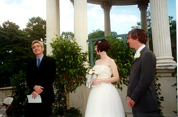
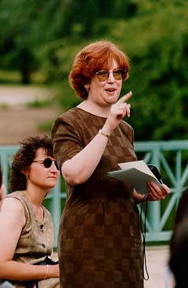

|
Thoughts and blessings. This was the "audience participation" part of the ceremony that corresponds to the "time for sharing" tradition in the Unitarian service. Our friend, Lane Becker, led this segment, inviting people to share stories and good thoughts about us and for us. Quite a few people stood up and had lovely things to say.  
|